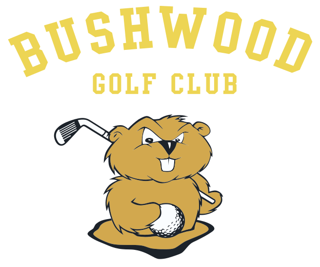
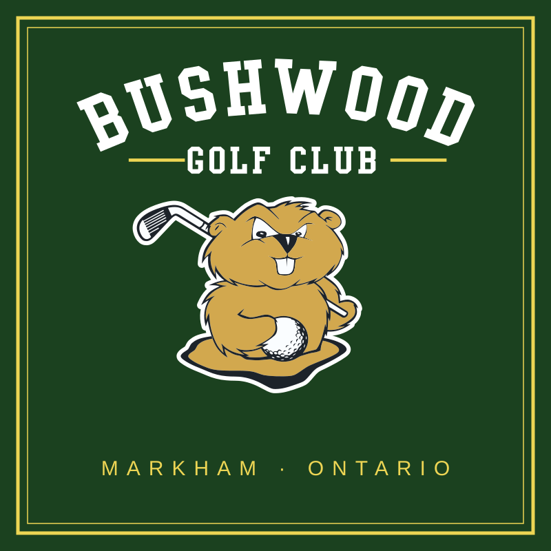

Logo options
Same gopher and lettering in every option. Nothing redrawn. Pick one and I'll carry it through the site and brand kit.
Current
As it is today
For comparison.Option A

Outlined
White keyline around the gopher so he lifts off any background, and yellow rules framing "Golf Club".
Option B
Outlined, yellow name
As A, with the name in Bushwood yellow for more punch on green.
Option C